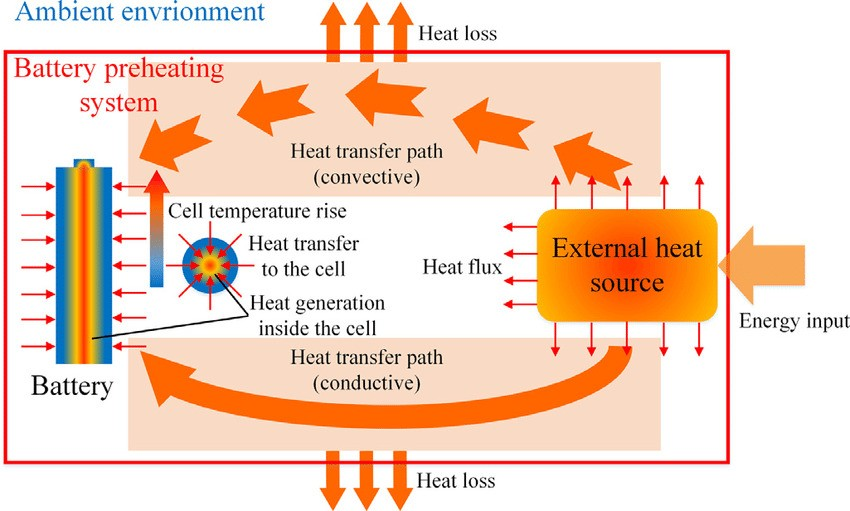
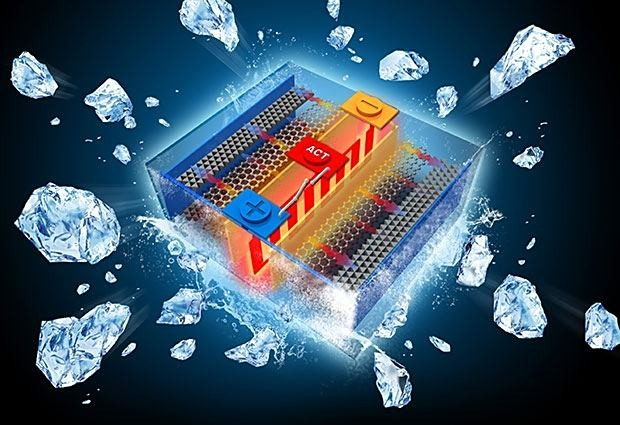
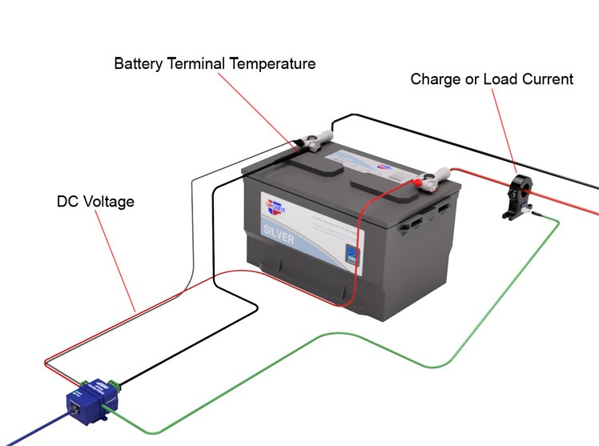
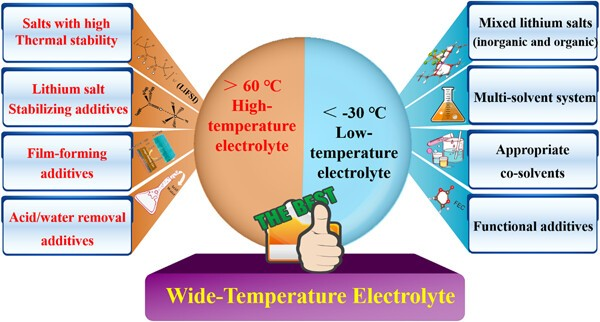

Lithium batteries are the backbone of contemporary energy storage, fueling our gadgets and electric cars. But, they are prone to environmental effects, especially temperature. Temperature significantly affects the performance and safety of these batteries. In this article, we'll discuss the complex connection between temperature and lithium batteries and explore the techniques used to lessen its impact.
Temperature's Performance Effects
- Low Temperature: A Chilling Slowdown
In freezing conditions, lithium batteries experience a significant decrease in their electrochemical reaction rates. This cold environment causes a decline in battery capacity and power output. Moreover, the battery's internal resistance rises, resulting in lower efficiency during charging and discharging.
- High Temperature: The Scorching Challenge
On the other hand, high-temperature conditions can be just as harsh. The battery's self-discharge rate increases, causing a loss in capacity. Additionally, the battery ages faster, resulting in a shorter lifespan.

Security Under the Temperature Microscope
- Low Temperature: The Viscous Encounter
In cold temperatures, the battery's electrolyte becomes thick, slowing down ion transmission. This impedance raises the internal pressure of the battery, which can lead to safety issues such as battery expansion, short circuits, and thermal runaway.

- High Temperature: A Fiery Affair
In a high-temperature environment, the chemical reaction rates in the battery increase. This heightened reactivity can cause the battery to overheat, and in severe cases, it can lead to safety concerns such as thermal runaway, combustion, and explosion.
Temperature Control Strategies
Understanding the profound influence of temperature on lithium batteries, experts have devised an array of control strategies to safeguard their performance and safety. Here are some key approaches:
- Temperature Monitoring and Control
To monitor the battery's temperature, a temperature sensor is installed. If the temperature exceeds the safe range, immediate action is taken to control the temperature rise. This can involve reducing the charging rate, lowering discharge power, or even stopping the charging and discharging processes.

- Temperature Management System
To ensure the battery stays at the ideal temperature, a temperature management system is implemented in the lithium battery system. This system improves heat dissipation by regulating components such as fans, heat sinks, or even liquid cooling mechanisms.
- Temperature Adaptation Design & Control Strategy
During the battery design phase, temperature adaptability is a crucial factor. This may include selecting appropriate electrolytes, adding temperature stabilizers, or using thermally stable materials. Such considerations are made to improve battery performance and safety across different temperature ranges.

Conclusion
Comprehending the complete impact of temperature on lithium batteries is a complex endeavor. It involves numerous factors and technologies. Therefore, in practical applications, it is wise to seek expert technical guidance and support tailored to specific conditions and requirements. This guarantees that lithium batteries consistently function within the optimal temperature range, maintaining their performance and safety standards.